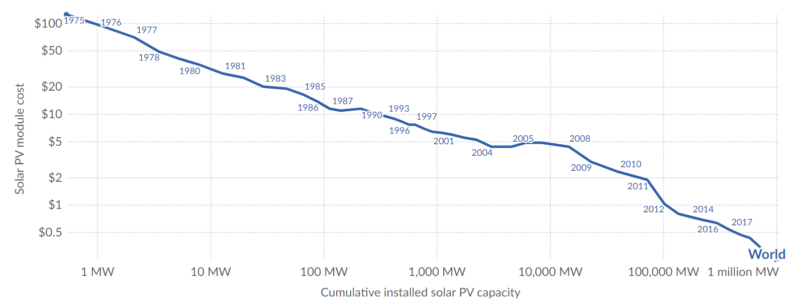
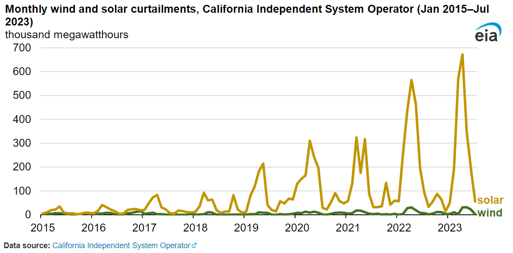
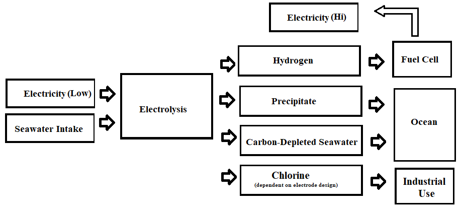
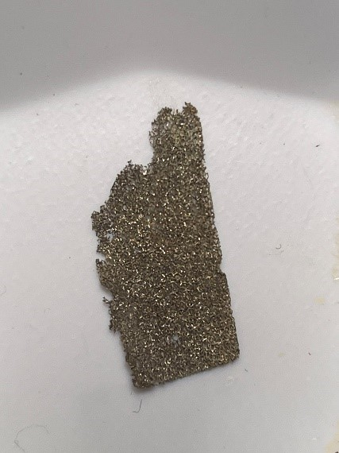
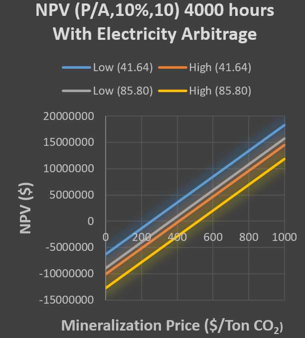
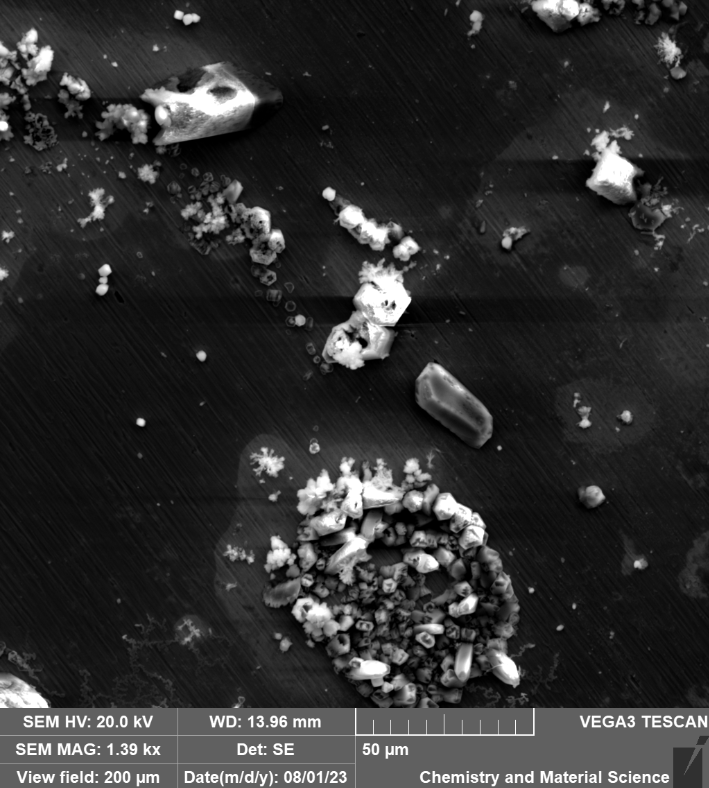

I have been working on a prototype system for carbon capture relying upon electrolysis in seawater to capture carbon as the solid mineral precipate Calcium Carbonate (CaCO3). This is a side reaction and generally regarded as an annoyance for electrolysis, sapping energy and reducing the efficiency of hydrogen evolution. Analysis indicates this is a financially viable way to mineralize carbon dioxide and attack the problem of climate change not just through avoiding emissions, but cleaning up past emissions. You are simultaneously mineralizing carbon while producing hydrogen which can then subsequently be used to power turbines or fuel cells and at large scale produce water.
Source: Our World in Data
The cost of solar power has shrunk enormously and likely will continue to plummet. This will result in a surplus of power at noon (peak solar irradiance) and the problem of arbitraging this power from peak production to peak demand. This results in what is known as the "duck curve".
The California electrical grid has struggled to absorb the increasing solar input. The amount of renewable power (especially solar) curtailed each year has grown.
Source: US Energy Information Agency
The price of electricity at certain nodes can vary quite dramatically over the course of a day, going completely negative at certain times of the year, particularly the spring when cooling demands are still low and production is high.
Source: CAISO
An arbitrage opportunity exists which current expansion in grid scale storage is striving to meet but the rate of solar growth is likely to exceed battery capacity for the foreseeable future.
So what should one do with this excess energy? Pursue a method that captures the arbitrage opportunity and mitigates climate change as a result of increasing CO2 emissions. In the interest of brevity I will spare a discussion of the state of global warming and its urgency. I suspect this (2024) summer will impress that upon us all but if not this summer, future summers assuredly will. A side reaction of seawater electrolysis is the production of metal carbonates, Calcium Carbonate in particular, which are insoluble in water and stable at ocean pH levels.
CO2(aq) + H2O ⇌ H2CO3
H2CO3 ⇌ H+ + HCO3-
HCO3- ⇌ H+ + CO32-
CaCO3 ⇌ Ca2+ + CO32-
(log Ksp = -8.48 at 25 C⁰)
This reaction proceeds forward or reverse dependent on the pH of the solution. In the alkaline environment around the cathode, the metal carbonates will precipitate out as a solid and can either be utilized or returned to the ocean at a point of erosion or collected and dispersed later in deeper water. The carbon in the solid carbonate has been removed from the sea-atmospheric system, removing and storing a carbon dioxide in one operation.
Source: Andrew Lyon
Electrolysis is performed on seawater during mid-day periods of low electricity prices with the resultant carbon depleted seawater returned to the ocean. The hydrogen from the operation is captured and later used to power a fuel cell during periods of high electrical prices resulting in an arbitrage of electricity. Depending on the design of electrode, chlorine or oxygen is generated at the anode. Chlorine can be captured and sold but scaling of the system will exceed industrial demand for chlorine and so will require chlorine evolution reaction (CER) suppressing anodes eventually.
CER suppressing anodes exist but are currently (to my knowledge) not pursued due to low efficiency production in seawater electrolysis (due to competing side reactions). These side reactions are beneficial in this design so relative hydrogen production inefficiency is not an issue.
Source: Andrew Lyon
The above image is a CER suppressing anode after 24-hours. There is an engineering challenge of capillary action interfering with the hydroxide layer at the water line resulting in the anode dissolving at the water-air interface but the bulk of the anode in the water is in good condition after 24-hours. This anode was fabricated based on work by Kuang et al. but will require some further work and prototyping. This is essentially the chloro-alkali process as well, conducted at a higher pH so chlorine evolution could be captured and sold which would allow the use of established platinum anodes. This would be more complicated from a prototype construction perspective and would only scale to a few millions tons per year (once you've saturated the chlorine market) so I prefer to pursue the CER suppressing anode design.
A conservative estimate of costs to construct a 4,000 ton CO2 per year sequestration system had an estimated breakeven priuce of between $250 and $550 per ton CO2 mineralized. This is well below current market prices.
Source: Andrew Lyon
I suspect that sub $50 a ton is very possible when built at scale. At $50 a ton, the 36 billion tons of global yearly emissions would cost $1.8 trillion to fully mineralize. The cost of mineralizing the emissions of a tank of gas would be 50 70 cents. I am fully convinced that industrial scale carbon capture is not just viable, it is inevitable. In a region with large amounts of solar energy and access to the ocean, excess electrical generation goes to mineralization and produced hydrogen could be used at night or as a peaker plant. Large scale use of hydrogen as a fuel will also produce capturable water (approximately 1 acre-foot per 4,000 tons of CO2 mineralized).
So what do I do next? I have been looking for a lab/company in the Los Angeles / Las Vegas areas to fabricate a larger anode and build a prototype system capable of mineralizing an appreciable amount in an hour (100g or so). I still need some experimentation on the prototype to thoroughly block the capillary action from breaking the protective layer. I have been trying to find a lab or company that can assist but so far, not really any interest.
If you have any questions or insight feel free to reach out to me at emaillyonam@gmail.com
Source: Andrew Lyon
Scanning Electron Microscope Image of a CaCO3 deposit on a steel cathode.